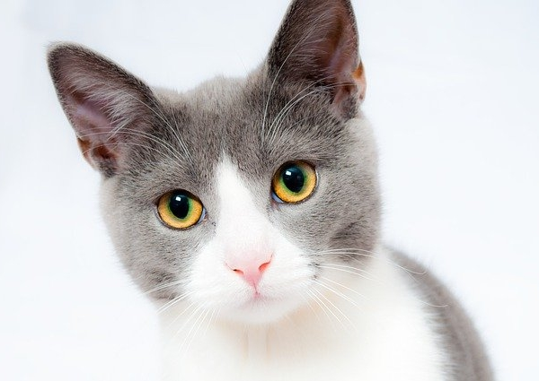

Welcome. My name is Michal Mrena and I am a PhD student a the Faculty of Management Science and Informatics. My research deals with Decision Diagrams and their applications in the reliability analysis of complex systems. I've created this website to publish documentation for some projects that I am involved in and that we use in our research. To make this page have more menu items I will also publish some thoughts on programming that I think might be interesting for beginners.
My thoughts on programming will be restricted to C++ which is my primary language. I don't want to present myself as an expert. I just hope that I can offer some useful insights – at least for the beginners. Besides C++ I also like to code in Haskell and I am also familiar with OOP languages such as C# and Java.
If you would like to contact me you do so via Twitter or email. You can also check my Github. I don't want to leave the rest of the page blank and because I like animals here is a stock photo of a cat:
